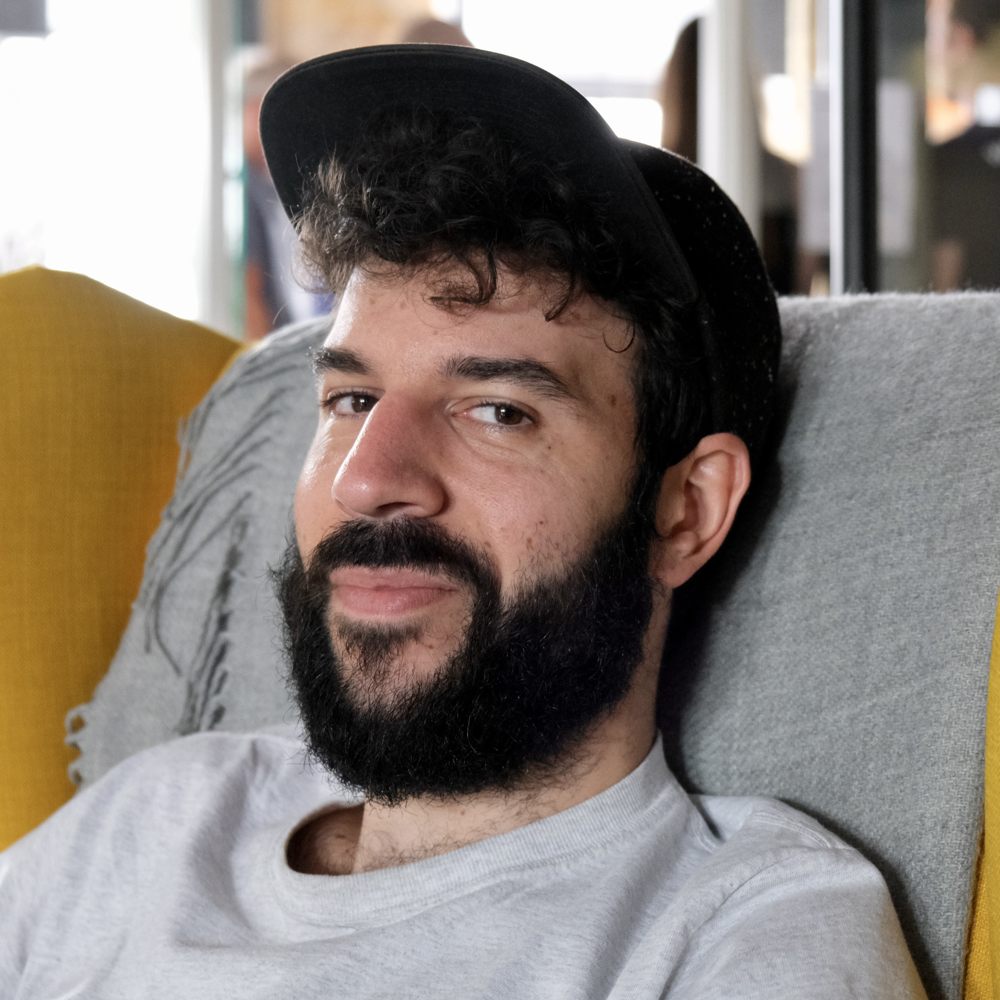

Hello, I'm Léonard Hetsch, a senior software engineer based in London with 8+ years of industry experience in engineering and coaching. Although I'm specialised in backend, I also have limited experience in platform and mobile engineering.
My skills and knowledge include (but are not limited to) Ruby / Rails, Elixir / Phoenix, Golang, JS (Node / React), Python, Java, SQL and NoSQL databases, AWS, Terraform, Docker, Kubernetes, Elasticsearch, Redis, REST API design, GraphQL, TDD, Github CI-CD / Gitlab, Jenkins and others. I also have an interest in software architecture and domain modelling.
Always hungry to learn, I'm trying to be a polyglot engineer and adapt to the various technologies on my path (I blogged about some of my learnings in Elixir, Ruby and Go). I believe technologies are tools and, just like you wouldn't use a hammer to cut your vegetables, you need to pick the right tech for the job.
I value team work, empathy, compassion and mentoring – this is true for teaching as well as building software. Be kind; all else is details. I recently found joy and excitement in teaching and mentoring future engineers in a software bootcamp, and I consider it an important step in my overall career path. I believe so-called "soft" skills such as empathy, respect and communication are as important as technical skills, especially in such a complex craft.
Below is an overview of what I worked on over the years:
Recently I have been a coach and curriculum designer at Makers, one of the leading engineering bootcamps in the UK. My work involved not only teaching future engineers how to build software right (using Ruby, Python, Test-Driven Development, proper Debugging and Code design methodologies) but also how to build it effectively in teams (by modelling skills such as communication, giving and receiving feedback through code reviews or retrospectives, and project planning). If you work in tech in London, there's a chance you worked with some of them.
I worked on new or existing curriculum to teach various technologies such as AWS (EC2, IAM, MSK, S3), Kafka, Airflow, Docker, Kubernetes, Terraform. But for me, the biggest learnings from these years are on the human side – software is built for humans by humans, and I believe 90% of problems of software lie in some sort of broken communication (hard-to-read code, unclear specifications or intent, unknowns unknowns, unclear code reviews, missing or outdated documentation, and so on. The 10% remaining problems might be due to sharks eating suboceanic cables and deploying on Fridays – though I'd be tempted to say these too are communication problems).
I've also learned that, if you can sometimes get away building software not fully knowing what you're doing, you can't get away teaching something you don't understand. Especially if you're paid to do so. They say to teach something is the best way to know it, and it's true.
Before that, in 2020 I worked at Stuart, a platform providing last-mile delivery for businesses, and earlier for DICE, a ticketing company.
My work there involved working on high-traffic web platform built with Elixir and Phoenix, Golang, PostgreSQL, MongoDB, GraphQL, React and Kubernetes. Some of the key challenges involved working with a very complex and evolving data model, a synchronisation between different datastores, integration with many third-party services and exposing a client-side API consumed by mobile clients.
2016 was the year I moved to London. It's also the time I joined Once, an online dating start-up, as lead backend engineer – I worked there until 2019. We used Ruby on Rails (with Sidekiq workers), Golang, Couchbase, Elasticsearch, Redis, all running on AWS. We also used Packer, Ansible and Terraform to build and provision the various EC2 instances we used.
We had some interesting challenges due to the nature of the product. One of those was to handle a sudden spike in traffic every day at noon, when all users would get a push notification. At the time we couldn't get the EC2 Load balancer to handle the load, so we implemented an HAProxy load balancer layer in front of the dozens of EC2 web instances which were started by our Auto-scaling group a bit before noon. I blogged a bit about this at the time. Another project we worked on was to implement a robust data pipeline using API Gateway + Lambda, AWS Kinesis and Redshift to support BI analysis.
We also launched a second mobile app where we had the freedom to work with a fresh application stack: Elixir / Phoenix with PostgreSQL on AWS with Terraform / Packer. Learning Elixir and the erlang programming paradigm was a huge shift – and caused a few headaches (what do you mean, I can't reassign variables!?). Aside dealing with the shift from Ruby/Rails to Elixir/OTP, we had a few challenges, notably when it came to manage a cluster of distributed Elixir nodes.
Around the time I moved to London, I also worked on an exciting project with two other co-founders. The app would allow customers to search for restaurants and order / pickup take-away food to cut queues - that was before Uber eats, Deliveroo and the likes would roll-out similar take-away ordering features. The company itself never took off, but the technical challenge felt great. I was the founding engineer and built the entire backend and mobile application from scratch, using Ruby on Rails, PostgreSQL, Elasticsearch, Objective-C/Cocoa consuming a JSON REST API and AWS as well as React for the merchant-facing web application.
Back in Paris, my first full-time position was in an organisation building e-commerce platforms in emerging markets, mostly in Africa and Asia. I worked mostly on the classifieds websites for general items, cars and housing. We worked with PHP, CPhalcon, MySQL, Elasticsearch, Redis, AWS and Puppet. Before that, from 2013 to 2015, I worked in a part-time apprenticeship contract at Wise Digital, a web agency and built various websites for clients using PHP, Symfony, HTML, Angular.
Here are also a few projects I've done on the side mostly for the sake of learning and fun:
I also blogged a few times over the years, mostly on Medium or elsewhere. Sharing knowledge has always been great, and I guess becoming a coach was the next logical step for this.
Today I still write on my free time, though mostly fiction – in my native language, French. I completed a first novel recently and working on other projects. In my free time you're also likely to find me reading, discovering new music, cooking or taking long walks around London or elsewhere.
Don't hesitate to reach out if you'd like to chat.